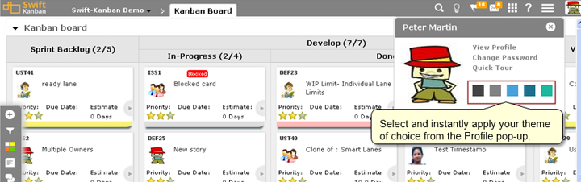
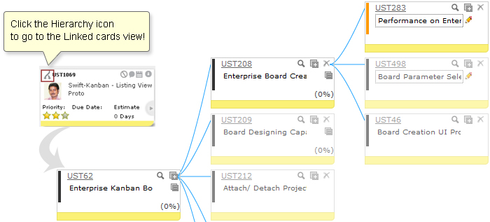
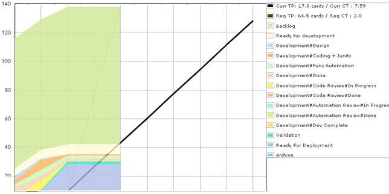
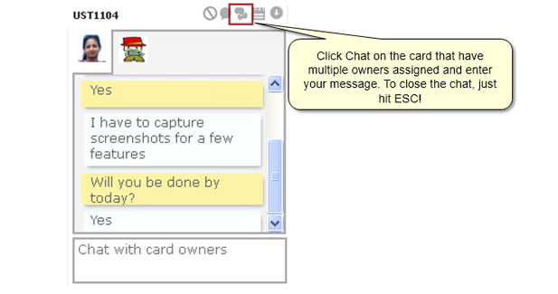

-
Experience Technology and Simplicity at its Best!
Yes, SwiftKanban v3.0 is here! This latest version brings you numerous innovations that we are sure you'll enjoy - right from a revamped UI, enhanced Usability, real-time Collaboration, and updated Analytics!
Here's a quick overview of SwiftKanban 3.0 to get you started:-Revamped Contemporary User Interface!
- The new UI has a modern look and feel, a more pleasing combination of colors and more color theme choices for the user - with many more to follow!
 -
Enhanced Hierarchy feature for easier Portfolio/ Enterprise Kanban!
- The new Hierarchy icon now appears right on the cards that belong to a hierarchy or that are linked to other cards. Click on it to directly go to the Linked Card/ Hierarchy View!
- Set up and manage flexible multi-board hierarchies for a variety of portfolio, program and multi-team scenarios!
 -
Enhanced Analytics: Forecasting Capability of the CFD
As we focus on providing greater insight to users, we felt it was more appropriate to rename this module "Analytics". Stay tuned as we continue to improve the insights you can get into your projects!
Use the "Show Prediction" flag to forecast the required throughput to complete backlog items based on the current progress. -
Chat with other Card Owners - individually and as a group!
- The Card and the Board Chat features are in Beta. We invite you to use them and give us your suggestions for enhancements!
 -
SwiftSync — The Most Enterprise-Ready Integration Technology!
For a full list of integrations, go to http://swiftkanban.com/swiftsync-integration